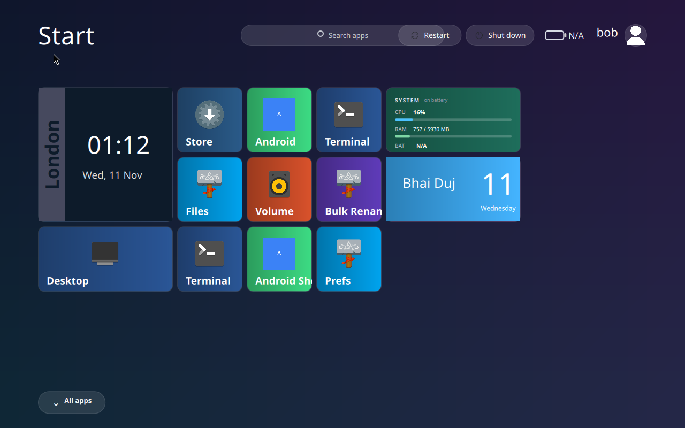
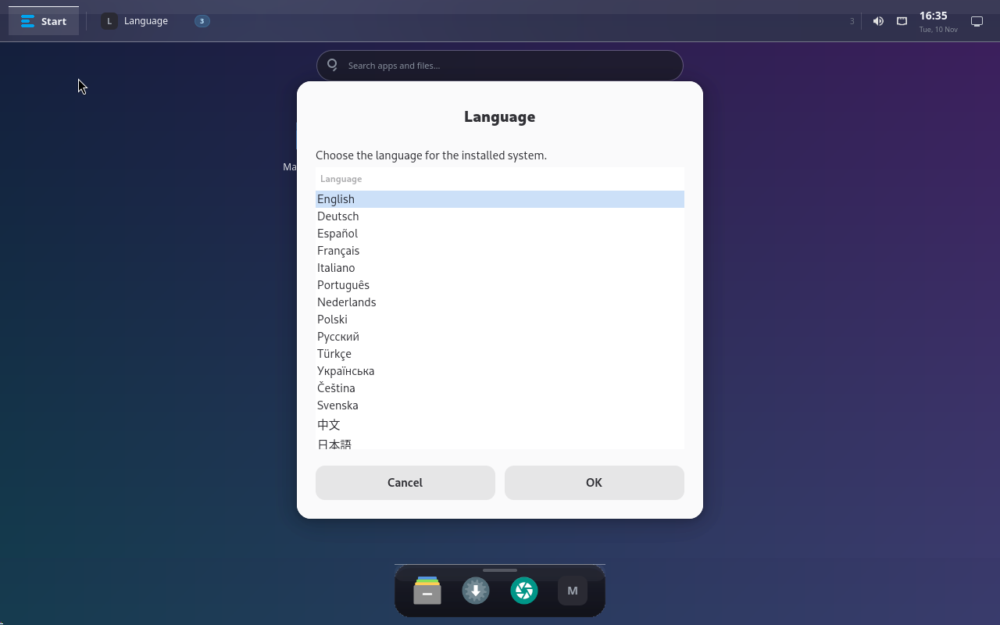
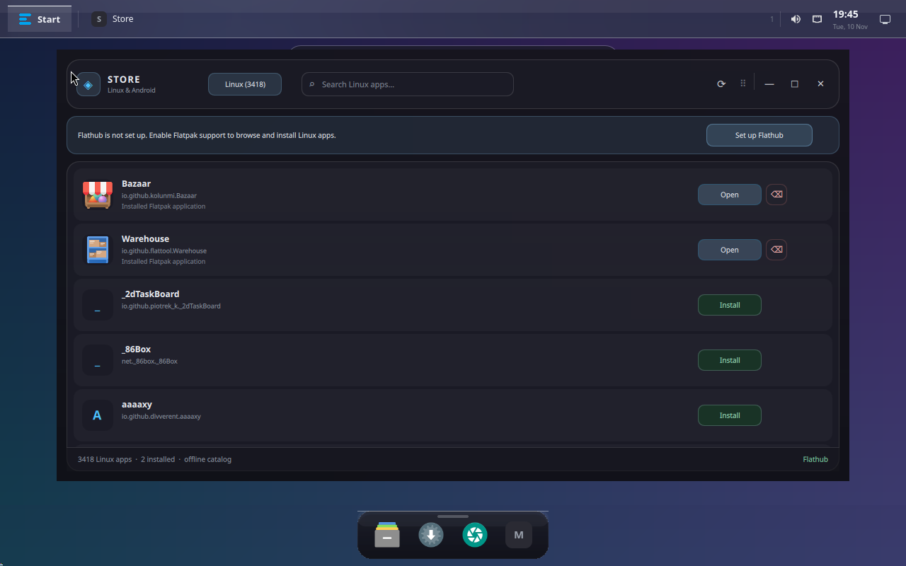
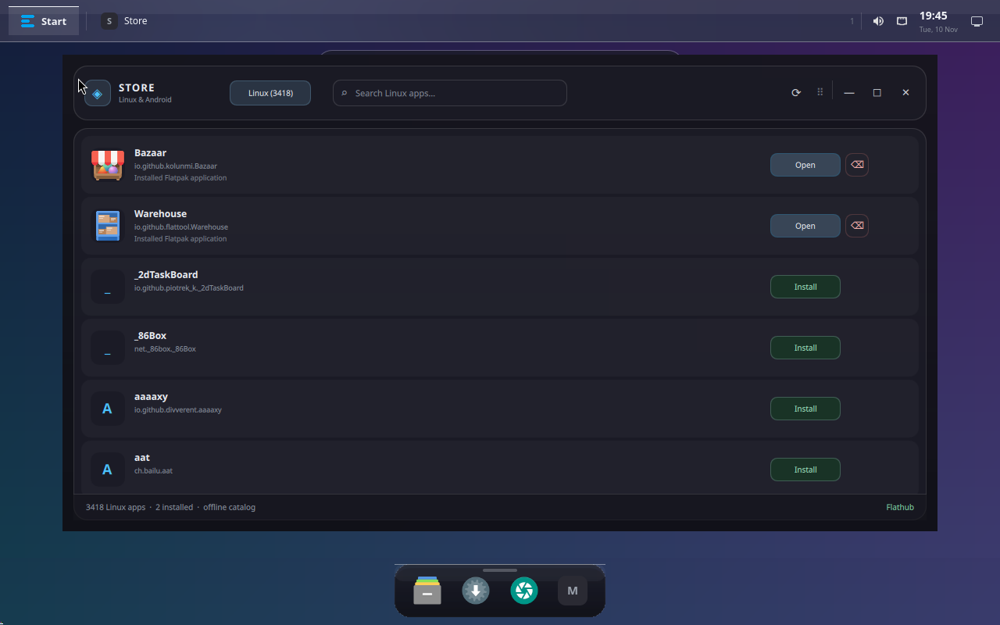
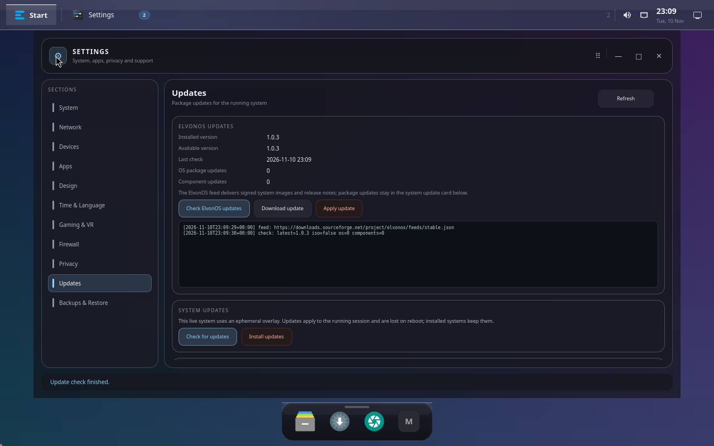
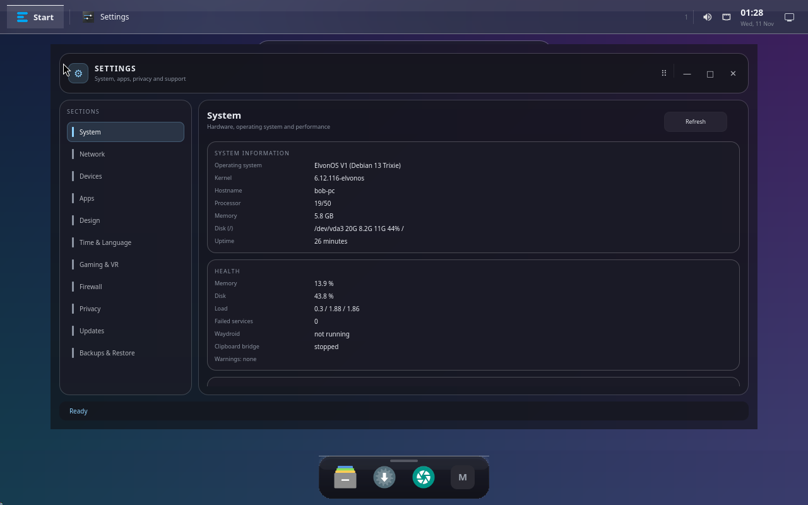
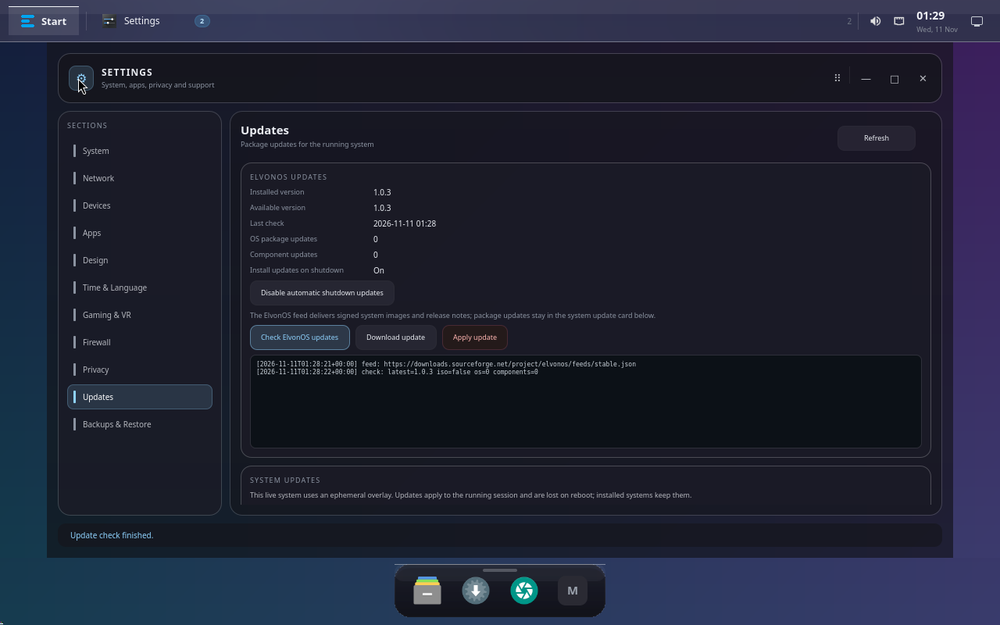

Live session, installer and update settings, captured on 2026-11-10 (QEMU, 1280×800).

Start screen — Metro tiles plus always-visible Restart and Shut down buttons.

Installer — language selection (15 languages, English default).After installation — Start screen of a freshly installed system with the user-selected account bob.

Store → Flathub setup — banner and one-click setup when Flathub is missing.

Store with Flathub — 3,400+ Linux apps, install/open actions, Android tab.

Settings → Updates — last check, OS/component counts and the live update log.

Settings — system overview with health card.

Settings → Updates — signed ElvonOS feed with Check, Download and Apply actions.